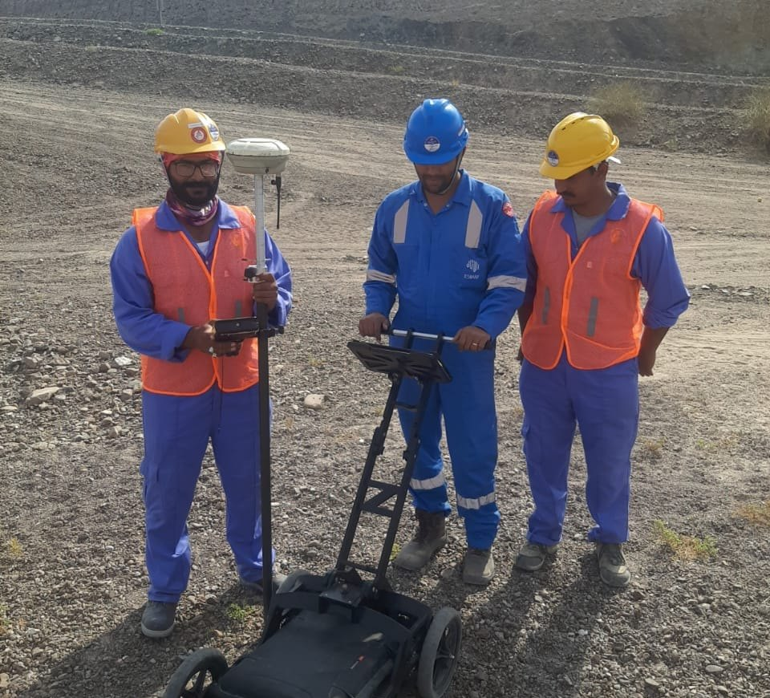

Engineers who read the ground for a living
Aviqor Mapping Pvt. Ltd. is a Hyderabad-based geophysical and geospatial survey company, founded in April 2025 by engineers from the National Institutes of Technology.
Experienced hands, young energy
Aviqor started in April 2025 with a simple idea: infrastructure in India should be designed and built on reliable knowledge of what is underground. Our founders, graduates of the NITs, bring years of field experience in GPR and geophysical surveys on roads, metros, smart cities and industrial plants in India, and on oil and gas and rail projects in Oman.
We combine that experience with a young team of engineers and geophysicists from the IITs, NITs and leading state universities. Senior staff plan and review every job; the wider team brings fresh training in data processing, GIS and 3D modelling.
Our main aim is to provide the best service in geophysics: the right method for the question, careful fieldwork, and reports that engineers can act on, at prices that stay competitive.

AVIQOR
Advanced
Modern GPR, seismic, resistivity and laser scanning systems.
Verification
Depths calibrated and targets cross-checked, never guessed.
Investigation
Methods chosen to answer the engineering question.
Quality
Reviewed data and reports signed off by specialists.
Outcomes
Deliverables that feed straight into design and execution.
Reliability
On time, on site, with results you can build on.
The best service in geophysics
To give every client accurate subsurface and spatial information through the right method, qualified people and honest reporting, at a competitive price.
Taking Indian infrastructure to the next level
We want non-destructive investigation to become standard practice on every Indian project, so fewer utilities are struck, rail tracks are maintained on evidence, and structures are built faster and more safely.
Qualified personnel on every project
Founders from the NITs. Engineers and geophysicists from the IITs, NITs and top state universities. Field crews trained on the equipment they operate.
Survey planning
Method selection, antenna choice, grid spacing and safety plans prepared before mobilisation.
Field acquisition
Experienced operators for GPR, resistivity, seismic and laser scanning in urban, plant and desert conditions.
Processing & reporting
Data processed and interpreted in-house, delivered as CAD, GIS, point clouds and engineering reports.